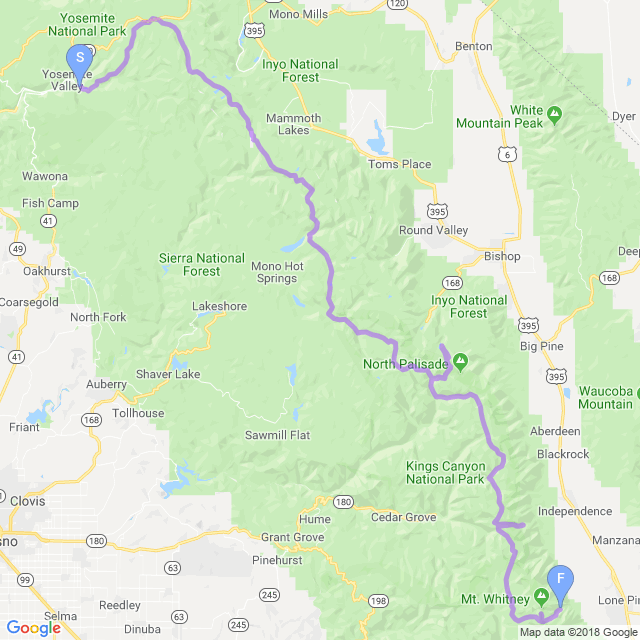

Location: Yosemite National Park, California
Trail Name: John Muir Trail
Trail Length: 213 Miles
History: The trail is named in honor of a Scottish-American environmentalist John Muir. Construction of the trail began in 1915 and completed in 1938. This trail starts in Yosemite National Park and ends at the summet of Mount Whitney, California. The trail passes through large swaths of alpine and high mountain scenery with 1,500 thru-hiking attempts each year.